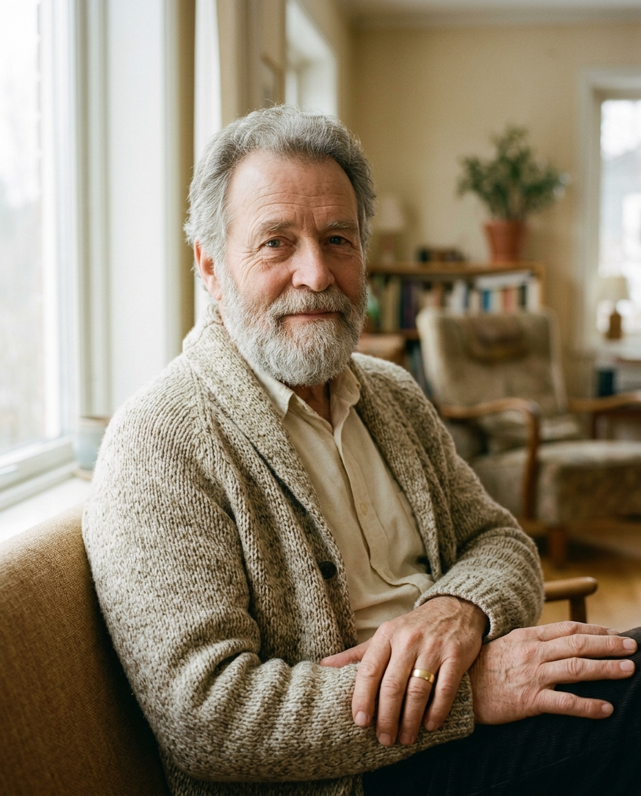
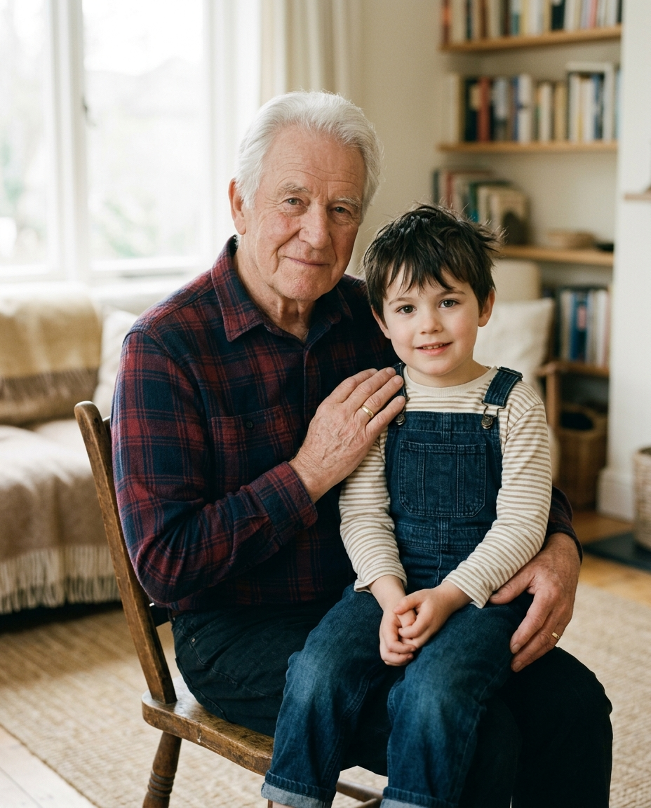
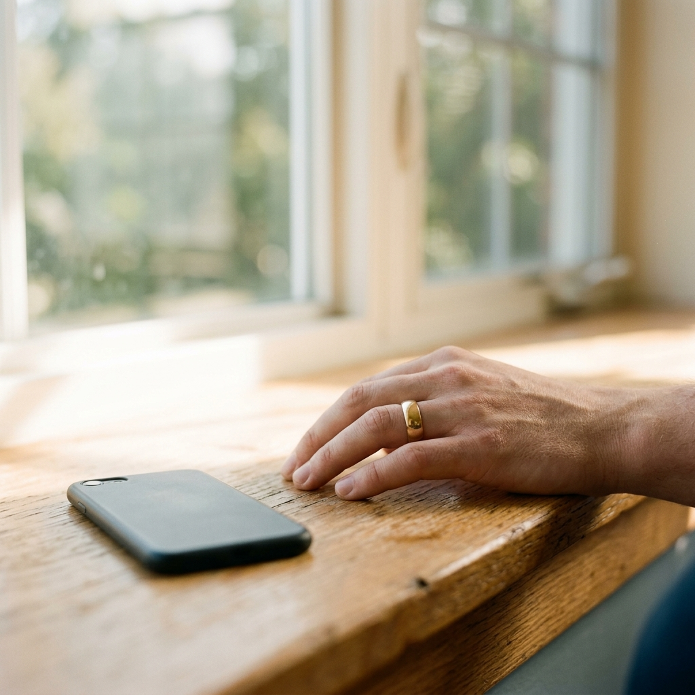

Pulse library — new stories
00-mei-david-reference.png
00-nadia-reference.png
00-sam-reference.png

00-tomas-reference.png

00-walter-reference.png
mei-david-1.png
mei-david-2.png

mei-david-3.png
mei-david-4.png
mei-david-5.png
mei-david-6.png
nadia-1.png
nadia-2.png
nadia-3.png
nadia-4.png
nadia-5.png
nadia-6.png
sam-1.png
sam-2.png
sam-3.png
sam-4.png
sam-5.png
sam-6.png
tomas-1.png
tomas-2.png
tomas-3.png
tomas-4.png
tomas-5.png
tomas-6.png
walter-1.png
walter-2.png
walter-3.png
walter-4.png
walter-5.png
walter-6.png